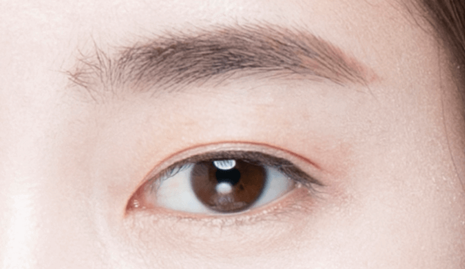

졸린듯한 눈을
생기 있고 뚜력하게!
#눈매 교정
[안검하수]
-

수술 시간
1시간
-

마취방법
수면/국소마취
-

실밥제거
4~5일 후
-

내원치료
1~2회
-

회복기간
개인차 있음
안검하수 눈매교정이란?
일반적으로 자연스럽게 눈을 떴을 때 검은 눈동자가 60%보이면 예쁜 눈이라고 합니다.
눈매교정은 눈꺼풀이 눈동자를 많이 가려 졸리고 피곤해 보이는 안검하수를 교정하여 검은 눈동자와
흰 눈동자의 노출 양을 교정함으로써 또렷한 눈매를 만들 수 있는 수술입니다.
BEFORE

AFTER

-

정상눈꺼풀인 경우
5mm
눈동자 중심으로부터
5mm정도 노출 -

안검하수인 경우
2mm
눈동자 중심으로부터
2mm정도 노출
나에게 맞는 수술법은?
눈매교정 수술방법
개인이 갖고 있는 눈의 구조, 처진 정도, 피부의 두께 등의 조건에 대한
VS
- 피부절개 없이 눈을 뜨는 근육을 조절하여
보다자연스러운 수술 방법. - 특징
- 피부절개를 통해 지방과 근육, 피부 등을
일정량 제거하며 눈을 뜨는 근육을
강화하는 수술방법
-
- 눈을 뜰때 눈썹을 많이 올리는 경우
- 쌍꺼풀 수술을 했지만 눈이 또렷하지 않은 경우
- 쌍꺼풀 수술 없이 또렷한 눈매를 만들고 싶은 경우
- 졸려 보인다는 말을 자주 듣는 경우
- 정도가 심하지 않은 안검하수의 경우
- 대상
-
- 쌍꺼풀 수술을 했지만 눈이 답답해 보이거나
큰 변화가 없는 경우 - 눈을 뜰때 눈썹을 많이 올리거나
이마의 주름이 심한 경우 - 쌍꺼풀 수술 없이 또렷한 눈매를 만들고 싶은 경우
- 눈꺼풀이 검은 눈동자를 1/3이상 가리는 경우
- 쌍꺼풀 수술을 했지만 눈이 답답해 보이거나
- 심한 경우 교정이 어려움
- 교정정도
- 심한 경우에도 완벽 교정 가능
- 붓기 거의 없음
- 붓기정도
- 붓기 있음
눈매교정
수술방법
비절개
눈꺼풀 안쪽에 실을 넣어 근육의 일부를 서로 맞닿게 묶어주어 근육의 길이를 줄여주는 방식으로,
미용적으로 눈의 세로길이를 늘기를 원할 때, 중증 이하의 심하지 않은 안검하수 교정에 효과적입니다.
-

1
수술 전 원인 파악을 위해
정밀 검사 후
충분한 상담이 이뤄집니다. -
2
눈꺼풀에 미세한 구멍을
생성합니다. -
3
눈을 정상적으로 뜰 수
있도록 근육의 장력을
조절하여 당겨줍니다. -

4
수술 후 자연스러우며
또렷하고 선명한 눈매를
완성합니다.
눈매교정
수술방법
절개
눈동자와 피부가 닿는 부위를 상하 방향으로 절개하여 길이를 줄여주고 묶어 주는 방식으로,
눈 뜨는 근육의 길이를 짧게 만들어 눈꺼풀이 한층 더 위로 올라가기 때문에 또렷한 눈매가 됩니다.
-
1
수술 전 원인 파악을 위해
정밀 검사 후 충분한 상담
이 이뤄집니다. -
2
디자인된 라인을 따라
절개를 한 뒤, 불필요한
조직을 제거합니다. -
3
눈을 정상적으로 뜰 수
있도록 근육의 장력을
조절하여 당겨줍니다. -

4
수술 후 자연스러우며
또렷하고 선명한 눈매를
완성합니다.
눈매교정
수술방법핵심 포인트
시원하고 또렷한 눈매를 위해 연세자연미는
자세한 상담과 진단을 통해 가장 효과적인
방법으로 수술을 진행합니다.


1:1 맞춤 수술 시행
개인마다 다른 얼굴 구조나 피부 특성에 따라
적합한 수술방법으로 시행합니다.